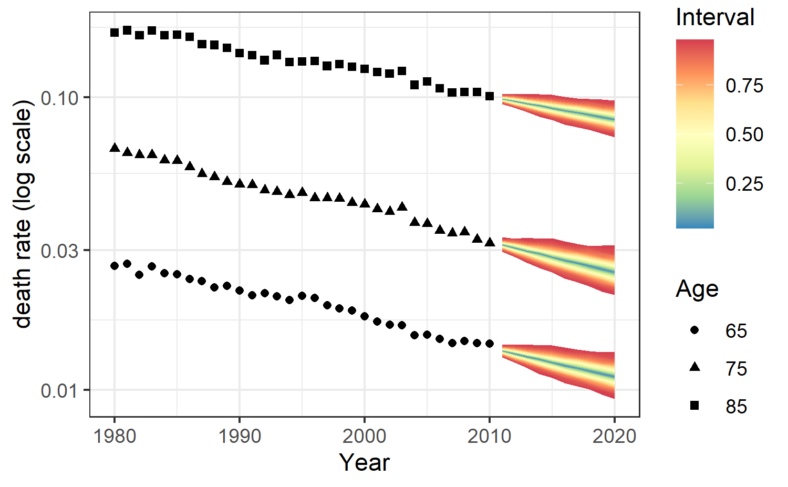
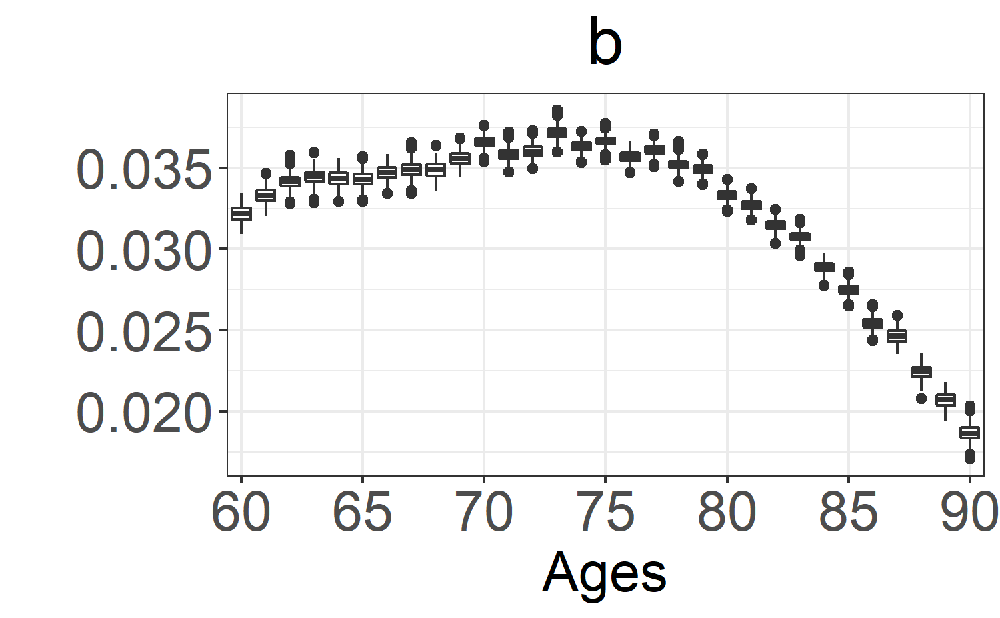
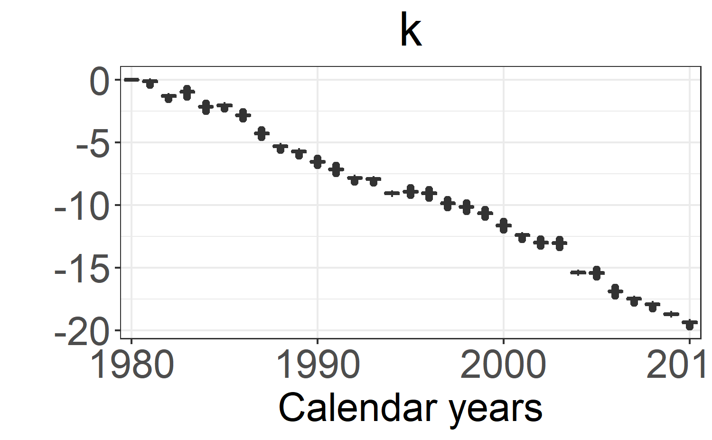
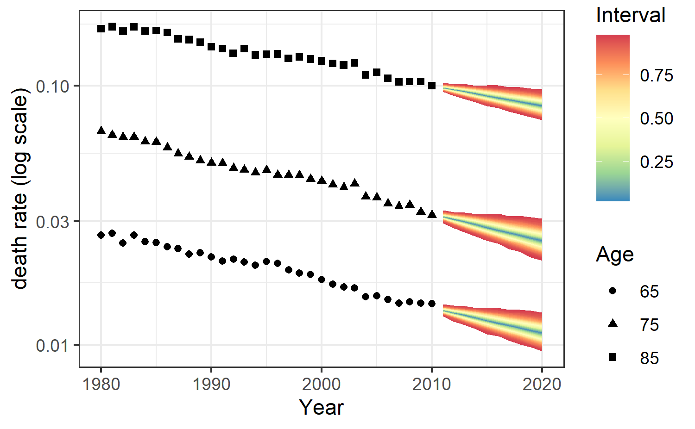

First, we explain how to estimate the Lee-Carter model using the lc_stan function in the StanMoMo package.
For illustration, the package already includes the object FRMaleData containing deaths (FRMaleData$Dxt) and central exposures (FRMaleData$Ext) of French males for the period 1816-2017 and for ages 0-110 extracted from the Human Mortality Database. In this example, we focus on ages 50-90 and the period 1970-2017. This can be obtained via:
ages.fit<-50:90
years.fit<-1970:2017
deathFR<-FRMaleData$Dxt[formatC(ages.fit),formatC(years.fit)]
exposureFR<-FRMaleData$Ext[formatC(ages.fit),formatC(years.fit)]As a reminder, the Lee-Carter model assumes that the log death rates are given by \[ \log \mu_{xt}=\alpha_x+\beta_x \kappa_t \] To ensure identifiability of the model, we assume that \[ \sum_x \beta_x=1,\kappa_1=0 \]
Moreover, we assume that the period parameter follows a random walk with drift: \[ \kappa_t \sim \mathcal{N}(c+ \kappa_{t-1},\sigma) \] The choice of priors for each parameter can be found in the documentation of each function.
All the parameters can be estimated either under a Poisson model with argument family = "poisson" or under a Negative-Binomial model which includes an additional overdispersion parameter \(\phi\) with argument family="nb": \[
D_{xt} \sim Poisson (e_{xt}\mu_{xt}) \text{ or } D_{xt} \sim NB (e_{xt}\mu_{xt},\phi)
\] Given the matrix of deaths deathFR and the matrix of central exposures exposureFR, we can infer the posterior distribution of all the parameters and obtain death rates forecasts for the next 10 years under a Poisson model by a simple call to the lc_stan function:
fitLC=lc_stan(death = deathFR,exposure=exposureFR, forecast = 10, family = "poisson",chains=2,cores=2)Internally, the sampling is performed through the rstan::sampling function. By default, Stan samples four Markov chains of 2000 iterations. For each chain, there are 1000 warmup iterations (hence, 4000 post warm-up draws in total). Moreover, by default, Stan uses 1 core but we recommend using as many processors as the hardware and RAM allow (up to the number of chains). All this can be set using additional arguments : for instance, if one wants to sample 2 chains of 3000 iterations with 1000 warm-up samples, the call is:
fitLC=lc_stan(death = deathFR,exposure=exposureFR, forecast = 10, family = "poisson",chains=2,iter=3000,warmup=1000,cores=2)For additional arguments, the reader can refer to the rstan::sampling documentation.
The output is an object of class stanfit (cf. the rstan package) which contains, among others, posterior draws, posterior summary statistics and convergence diagnostics.
The easiest way to extract the posterior draws is to call the rstan::extract function which returns a list with named components corresponding to the model parameters.
## [1] "a" "b" "c" "ks" "sigma" "k" "phi"
## [8] "k_p" "mufor" "log_lik" "pos" "pos2" "pos3" "lp__"Among these parameters, we find
a : \(\alpha_x\).b : \(\beta_x\).k : \(\kappa_t\).k_p : forecasts of \(\kappa_t\).mufor : forecasts of death rates \(\mu_{xt}\).log_lik : log-likelihoods.phi : overdispersion parameter for the NB model.c and sigma : drift and standard deviation of the random walk with drift.The user can have access to an interface for interactive MCMC diagnostics, plots and tables helpful for analyzing posterior samples through the shinystan package (fore more details, you can check the shinystan web page)
library(shinystan)
launch_shinystan(fitLC)Note: you need to close the shiny app before continuing in R.
Moreover, the package also includes functions to represent boxplots of the posterior distribution as well as fan plots for death rates predictions based on the ggplot2 and ggfan packages.
For instance, boxplots for the parameters from the Lee-Carter model can be obtained via:
boxplot_post_dist(fitLC, "a", ages.fit, years.fit)
boxplot_post_dist(fitLC, "b", ages.fit, years.fit)
boxplot_post_dist(fitLC, "k", ages.fit, years.fit)
All forecast death rates \(\mu_{xt}\) are stored in the output mufor. We point out that the output mufor is a matrix of dimension \(N\) \(\times\) \((A . M)\) where the number of rows \(N\) is the posterior sample size and the number of columns \(A.M\) is the product of \(A\) the age dimension and \(M\) the number of forecast years.
Predictions of death rates for the next 10 years for ages 65, 75 and 85 with prediction intervals can be obtained as follows via
forecasting_plot(fitLC,ages.fit,years.fit,deathFR,exposureFR,c(65,75,85))
In a similar fashion, the models RH, APC, CBD and M6 can be estimated with the following functions:
| Model | Predictor |
|---|---|
| LC | \(\log \mu_{xt} = \alpha_x + \beta_x\kappa_t\) |
| RH | \(\log \mu_{xt} = \alpha_x + \beta_x\kappa_t+\gamma_{t-x}\) |
| APC | \(\log \mu_{xt} = \alpha_x + \kappa_t +\gamma_{t-x}\) |
| CBD | \(\log \mu_{xt} = \kappa_t^{(1)} + (x-\bar{x})\kappa_t^{(2)}\) |
| M6 | \(\log \mu_{xt} = \kappa_t^{(1)} + (x-\bar{x})\kappa_t^{(2)}+\gamma_{t-x}\) |
fitRH=rh_stan(death = deathFR,exposure=exposureFR, forecast = 10, family = "poisson",cores=4)
fitAPC=apc_stan(death = deathFR,exposure=exposureFR, forecast = 10, family = "poisson",cores=4)
fitCBD=cbd_stan(death = deathFR,exposure=exposureFR, age=ages.fit, forecast=10,family = "poisson",cores=4)
fitM6=m6_stan(death = deathFR,exposure=exposureFR, age=ages.fit,forecast = 10, family = "poisson",cores=4)For information, the estimated parameters \(\kappa_t^{(1)}\), \(\kappa_t^{(2)}\) and \(\gamma_{t-x}\) are respectively stored in the variables k,k2 and g. The forecast parameters are respectively stored in the variables k_p,k2_p and g_p.
You can check the next vignette to know more about model averaging techniques based on leave-future-out validation.